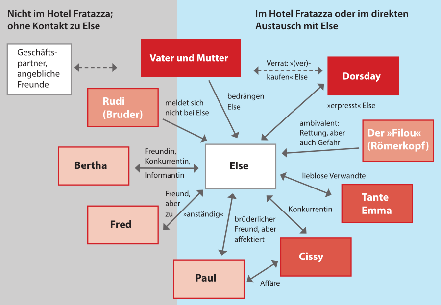

Fräulein Else
eine Novelle von Arthur Schnitzler
Gliederung
Der Autor: Arthur Schnitzler
Die Novelle
Interpretation
Gliederung
Der Autor: Arthur Schnitzler
Die Novelle
Interpretation
Gliederung
Der Autor: Arthur Schnitzler
Die Novelle
Interpretation
- Sprache
- Epocheneinordnung
- Intention des Autors
Der Autor: Arthur Schnitzler
- Geboren am: 15. Mai 1862 in Wien
- Studierte Medizin
- Kritiker des 1. Weltkrieges
- Führt den inneren Monolog mit seiner Novelle "Leutnant Gustl" ein
- Ab 1921 zunehmende Isolierung von der Gesellschaft
- Stirbt am: 21. Oktober 1921 in Wien

Gliederung
Der Autor: Arthur Schnitzler
Die Novelle
Interpretation
- Sprache
- Epocheneinordnung
Die Novelle
- Monolog-Novelle
- Veröffentlicht: 1924
Erschaffung eines neuen Genres
Hugo von Hofmannsthalabgeschlossenes, abgetanes
Thema
Jakob Wassermann
Die Novelle
Gliederung
Der Autor: Arthur Schnitzler
Die Novelle
Interpretation
- Sprache
- Epocheneinordnung
- Intention des Autors
Interpretation
- Epoche: Ästhetizismus
- Ursprung: England
- Gegenströmung von Realismus und Naturalismus
- Das "schöne" als höchsten Wert
- Ethik, Erkenntnis, Religiösität stehen im Hintergrund
Interpretation
- Monolog-Novelle
- Sicht aus Protagonisten heraus
- Wichtigster Teil: Innerer Monolog
→ Versuch, sprachliche Ausdrucksmöglichkeiten für innerpsychische Vorgänge zu finden
Sprache
- Insgesamt einfache Sprache
- Oberschicht benutzt Französische Begriffe
- Gedankliche Darstellung teils Wirr
Der Brief ist ja irrsinnig. Ich soll mit Dorsday sprechen? Zu Tod würde ich mich schämen. – – Schämen, ich mich? Warum? Ich bin ja nicht schuld. – Wenn ich doch mit Tante Emma spräche? Unsinn. Sie hat wahrscheinlich gar nicht so viel Geld zur Verfügung. Der Onkel ist ja ein Geizkragen. Ach Gott, warum habe ich kein Geld? Warum hab ich mir noch nichts verdient? Warum habe ich nichts gelernt? O, ich habe was gelernt! Wer darf sagen, daß ich nichts gelernt habe? Ich spiele Klavier, ich kann Französisch, Englisch, auch ein bißl Italienisch, habe kunstgeschichtliche Vorlesungen besucht – Haha! Und wenn ich schon was Gescheiteres gelernt hätte, was hülfe es mir? Dreißigtausend Gulden hätte ich mir keineswegs erspart.
Hinterfragt sich selber
→ Instabile Persönlichkeit
Auch als Tote will ich nicht mehr zurück. Und Papa und Mama sollen sich nicht kränken, mir geht es besser als ihnen. Und ich verzeihe ihnen. Es ist nicht schade um mich. – Haha, was für ein komisches Testament. Ich bin wirklich gerührt. Wenn ich denke, daß ich morgen um die Zeit, während die andern beim Diner sitzen, schon tot bin? – Die Tante Emma wird natürlich nicht zum Diner herunterkommen und Paul auch nicht. Sie werden sich auf dem Zimmer servieren lassen. Neugierig bin ich, wie sich Cissy benehmen wird. Nur werde ich es leider nicht erfahren. Gar nichts mehr werde ich erfahren. Oder vielleicht weiß man noch alles, solange man nicht begraben ist? Und am Ende bin ich nur scheintot. Und wenn der Herr von Dorsday an meinen Leichnam tritt, so erwache ich und schlage die Augen auf, da läßt er vor Schreck das Monokel fallen. Aber es ist ja leider alles nicht wahr. Ich werde nicht scheintot sein und tot auch nicht. Ich werde mich überhaupt gar nicht umbringen, ich bin ja viel zu feig. Wenn ich auch eine couragierte Kletterin bin, feig bin ich doch. Und vielleicht habe ich nicht einmal genug Veronal. Wieviel Pulver braucht man denn? Sechs glaube ich. Aber zehn ist sicherer. Ich glaube, es sind noch zehn. Ja, das werden genug sein.
Spontanität (unwillkürliche Mentale Vorgänge)
Dorsday, Dorsday! Das ist ja der – Funfzigtausend! Wird er sie abschicken? Um Gottes Willen, wenn er sie nicht abschickt? Ich muss es ihnen sagen. Sie müssen ihn zwingen. Um Gottes willen, wenn alles umsonst gewesen ist? Aber jetzt kann man mich noch retten. Paul! Cissy! Warum hört ihr mich denn nicht? Wisst ihr denn nicht, dass ich sterbe? Aber ich spüre nichts. Nur müde bin ich. Paul! Ich bin müde. Hörst du mich denn nicht? Ich bin müde, Paul. Ich kann die Lippen nicht öffnen. Ich kann die Lippen nicht öffnen. Ich kann die Zunge nicht bewegen, aber ich bin noch nicht tot.“
Hilflosigkeit
Intention des Autors
Kritik an Lügen der höherrangigen Gesellschaft sowie die egozentrischen Wünsche der Männer
Danke
für eure Aufmerksamkeit
Quellen
- Sekundärliteratur Raclam
- https://de.wikipedia.org/wiki/Fr%C3%A4ulein_Else
- http://www.syberberg.de/Syberberg2/Else_01_QT.html
- http://www.else.uni-wuppertal.de/else_figuren_tabelle
- https://www.dhm.de/lemo/bestand/objekt/f55-953
- https://www.schnitzler-edition.net/genetisch
- https://www.kunst-gemalde.com/die-Laute-Tonalist-%C3%84sthetizismus-Thomas-Dewing.html